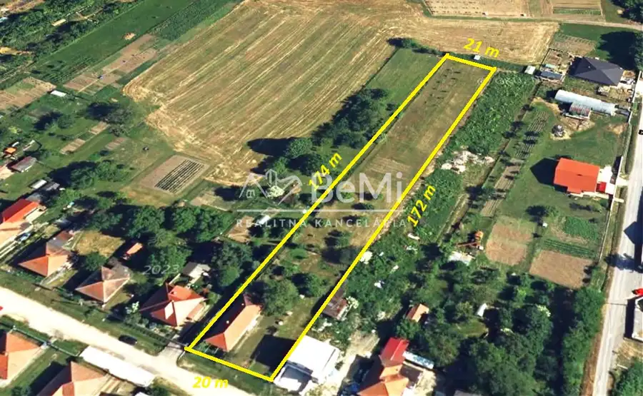
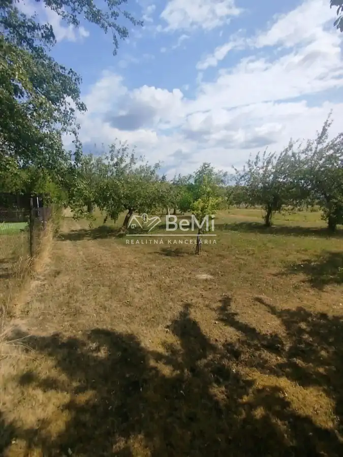
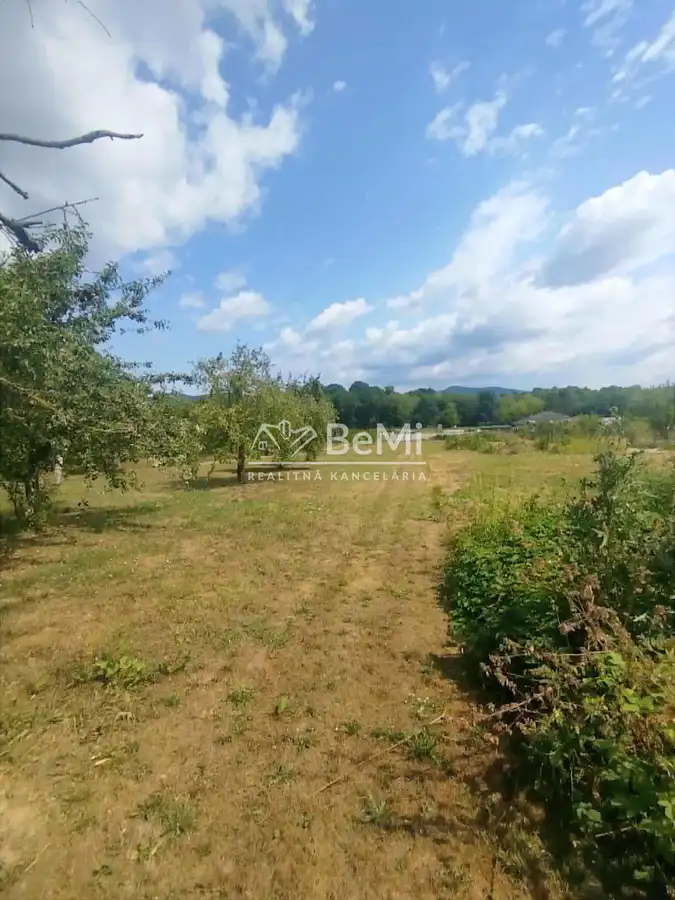
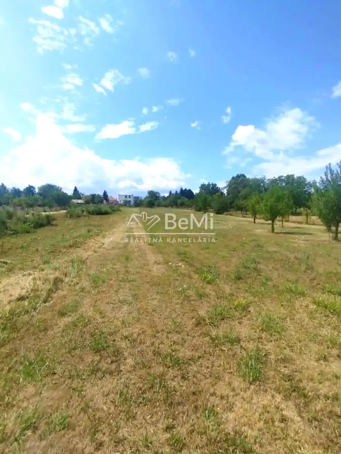
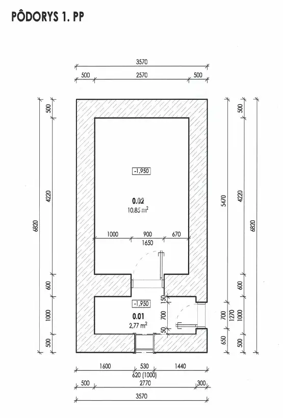
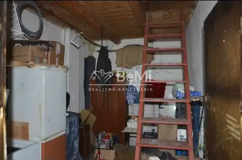

Pozemok s rodinným domom o výmere 3 671 m² v obci Jelenec
Jelenec







- Plocha3671 m²
- VlastníctvoOsobné
O nehnuteľnosti
Ponúkame na predaj rozľahlý pozemok so starším rodinným domom v obľúbenej obci Jelenec, vzdialenej len niekoľko minút od mesta Nitra.Nehnuteľnosť sa nachádza v zastavanom území obce a pozostáva z troch parciel registra C s celkovou výmerou 3 671 m². Pravidelný tvar pozemku s približnou šírkou 20 m a dĺžkou približne 172 m ponúka široké možnosti budúceho využitia.Na pozemku sa nachádza starší rodinný dom so súpisným číslom, vhodný na rekonštrukciu alebo odstránenie podľa zámeru nového majiteľa.Vďaka svojej výmere a polohe je nehnuteľnosť ideálnou voľbou pre záujemcov, ktorí hľadajú pokojné bývanie s dostatkom súkromia a veľkorysým pozemkom v príjemnom vidieckom prostredí.Základné informácie:celková výmera pozemku: 3 671 m²približné rozmery: 20 × 172 mpozemok sa nachádza v zastavanom území obcerodinný dom so súpisným číslom inžinierske siete na pozemku bez evidovaných tiarch na liste vlastníctvaVýhody nehnuteľnosti:veľkorysá výmera pozemku,pokojná lokalita s výbornou dostupnosťou do Nitry,vhodné miesto na rekonštrukciu existujúceho domu alebo výstavbu nového rodinného bývania,dostatok priestoru na záhradu, oddychovú zónu či ďalšie využitie podľa vlastných predstáv.Obec Jelenec patrí medzi vyhľadávané lokality v blízkosti Nitry. Ponúka príjemné vidiecke prostredie, základnú občiansku vybavenosť a rýchlu dostupnosť do krajského mesta. Milovníkov prírody a turistiky poteší blízkosť hradu Gýmeš a pohoria Tribeč.V prípade záujmu je možné rokovať aj o kúpe susediacich pozemkov, čím sa otvára možnosť rozšírenia celkovej výmery nehnuteľnosti.Ak hľadáte priestranný pozemok s rodinným domom na pokojnom mieste a s výbornou dostupnosťou do Nitry, neváhajte nás kontaktovať.NAŠE CENY SÚ VRÁTANE PROVÍZIE ZA KOMPLETNÝ SERVIS A SÚ SCHVÁLENÉ MAJITEĽOM.Petra Mandáková0918564715 p.mandakova@realitybemi.sk
Parametre
- Druh
- Pozemok pre rodinné domy
- Dátum zverejnenia
- 30. 07. 2026
- Plocha pozemku
- 3671 m²
- Typ
- Predaj
- Vlastníctvo
- Osobné